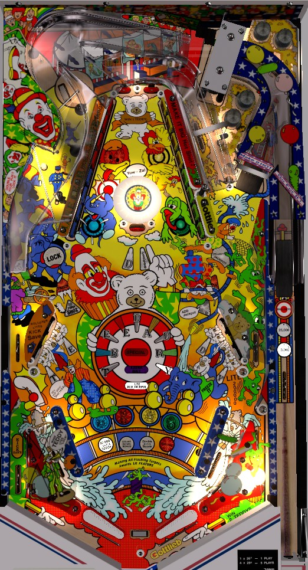

Not to be confused with Hot Shot (Gottlieb, 1973), an electromechanical game about billiards.
Try to always be in multiball. To light a lock at the left orbit, make a Light Lock timing skill shot, or complete the flashing Teddy targets around the lower playfield, or earn a Light Lock Pump Shot (right side lane -> left orbit). The only multiball-specific scoring is that in lanes light the center standup briefly for 200,000 points; use multiball to complete sets of the drop targets, which can start a 4,000,000 hurry-up or a double your score hurry-up at the drop targets, and raise the Save target between the flippers. Hitting the Save target lights the right ramp for Jackpot.
The below picture of Hot Shots' playfield was taken from the VPX recreation by randr and shannon.

The skill shot is timing based. In the shooter lane are three inserts labelled 10,000, 25,000, and Bullseye, with a light that rotates between them quickly. When the ball presses the rollover switch near those inserts, the lit value is awarded. 10,000 and 25,000 give points; Bullseye gives the award shown on the alphanumeric display, which can be Light Lock, Bonus Hurry-up, 2 Teddys, and possible others. A full plunge will be fed to the left in lane via the left side lane at considerable speed, so be ready for a ski pass or on-the-fly shot.
Each target down in any bank scores 3,000 points. Completing the four drop targets of one colour will light that colour solidly if it is flashing, and also award the corresponding letter in Bear if it has not already been earned. Knocking down all 16 targets in a single ball will raise the Save drop target between the flippers and give whichever award is lit near the flippers, which can be:
If you hit all 8 targets on one side without hitting any of the 8 targets on the other side while Bonus Prize or Double Your Score is running, 10 instant Specials are scored, equal to 5,000,000 points in competition/novelty play. This is nearly impossible to do given the angles of the drop target banks and the pop bumper between them.
While Double Your Score is running specifically, the top standup targets between the banks of drops score 1 Teddy per hit in addition to their usual 10,000 points.
The five white standup targets in the lower half of the playfield correspond to the letters in Teddy: T and E in the lower left, the first D in the center near the pop bumpers, and D and Y in the lower right. Hit a flashing target to light it solidly. The four colours of drop target correspond to the letters in Bear. Spell Teddy to light the left orbit for a lock; when a ball is locked, 2-ball multiball begins as soon as the second ball enters the playfield. If all 5 letters in Teddy are lit solidly but the lock is not lit, you must complete the word Bear to make the Teddy targets flash again; this most often happens if you spell Teddy to light the lock, but drain while the lock is lit (the lit lock is not carried over to your next ball).
Awards are given for spelling the complete phrase Teddy Bear. The first completion of Teddy Bear on a ball lights the right ramp to add 150,000 points to the Jackpot for the rest of the ball. The 2nd completion of Teddy Bear on a ball scores Extra Ball, and the 4th completion of Teddy Bear in a single ball scores Special. Like the Special, Extra Ball scores 500,000 points in competition/novelty play.
The only multiball-specific scoring feature is that a ball through either in lane during multiball lights the center standup target (the first D, attached to the pop bumper) for 200,000 points for about three seconds. While this is not negligible, use multiball instead to go for drop target completions toward potential big hurry-ups or Double Your Scores with the assistance and safety net of a second ball in play.
The jackpot is a progressive carryover jackpot. The jackpot starts at 500,000 points when the machine is powered on or immediately after it is won. Draining down the left out lane or shooting the right ramp after completing Teddy Bear at least once on the current ball advances the jackpot. Each advance adds 150,000 points to the jackpot, unless the jackpot is currently 9,950,000 points, at which time one further advance will max the jackpot out at 9,999,000 points. To collect the jackpot, first knock down all 16 drop targets to raise the Save drop target between the flippers. The Save target blocks off the center drain, but like any other drop target, it falls down when hit. Knocking down the Save target in this way lights the right ramp for Jackpot for about 20 seconds. The Jackpot can be collected multiple times during this interval, but collecting the jackpot always resets it, so the subsequent collects will only score 500,000 (or 650,000 if the right ramp is also lit for Advance Jackpot).
Rolling through the side lane behind the lower right standup targets during single ball play qualifies Pump Shot at the left orbit for about 7 seconds. Pump Shot scores 50,000 the first time, 100,000 the second time, Lite Lock the third time, and 1 Teddy the fourth time. If Pump Shot times out, you must go through the lower right side lane to relight it, but the Pump Shot's value will remain until the ball drains or the lit Lock is scored.
The side lane behind the lower left standup targets lights the Kick Save in the left out lane. The Kick Save is an automatic kickback that can be used repeatedly while it is lit, but unlights on its own after about 20 seconds.
Hot Shots has a conventional in/out lane setup. The in lanes slant inward from top to bottom, which aligns their entrance with the side lanes that run behind the lower standup targets on each side. A ball coming down one of these side lanes does rattle into the out lane instead of smoothly rolling into the in lane reasonably often. On the left side, this does not matter, because the lower left side lane lights the Kick Save in the left out lane which will protect you, but there is no such protection on the right side, which can lead to some cheap-feeling drains. The left out lane adds 150,000 points to the Jackpot, and right out lane awards 2 Teddys. Between the flippers are both the Save drop target, which protects against one center drain and qualifies the Jackpot when used, as well as a conventional center peg below it.
End of ball bonus is based solely on the number of Teddys earned in the game so far. Teddys can be earned as skill shots, by draining down the right out lane, as a possible award for clearing all 16 drop targets, by spelling the complete phrase Teddy Bear, or as a Pump Shot award. There appears to be a game setting that governs whether each Teddy is worth 20,000 or 50,000 points in end of ball bonus. Even at the higher value of 50,000, this scoring is not particularly meaningful, so don't be afraid to tilt if you need to. The number of Teddys earned is held from ball to ball. The first Teddy is not given for free, so it is possible to drain with 0 end of ball bonus. There is no way to multiply the bonus or collect it mid-ball.
Specials and extra balls each score 500,000 points in competition/novelty play.
Thanks to Colin MacAlpine for sharing his Hot Shots INDISC notes, which were a great starting point for putting together this guide.